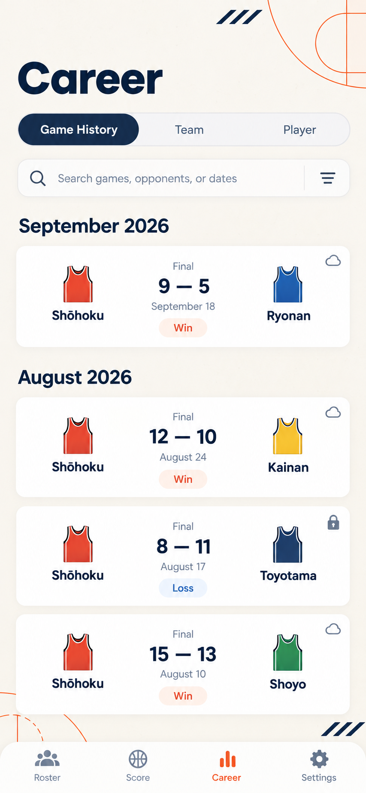
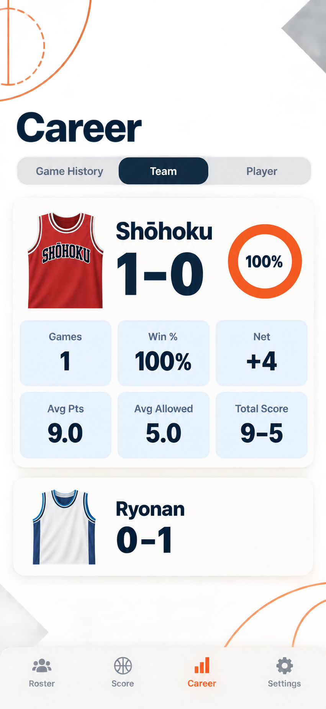
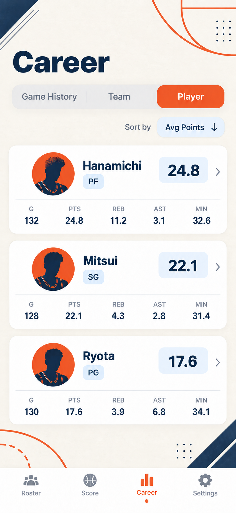

Career 三个 Tab 设计稿
状态：设计候选已生成，未实施到产品
本轮只针对 Career 内的 Game History、Team、Player 三个 tab 生成新的界面方向。三张稿件共享 Adaptive A 的纸张底色、橙色球场线、深海军蓝和浅蓝统计块，但分别强化不同的信息阅读方式。



设计约束
- 保留 Career 三段切换关系以及现有数据语义。
- Game History 保留比赛月份分组、比分、日期、锁定/iCloud 状态的表达空间。
- Team 保留球队胜负、比赛数、胜率、净胜分、场均得分/失分和总比分。
- Player 保留排序字段、球员跳转、比赛数、场均得分、篮板、助攻和时间等信息。
- 背景不承载任何语言文字，后续实现仍应使用 SwiftUI Shape，而不是固定海报图。
- 不修改记分页，不修改数据模型、存储结构或现有交互逻辑。
请先选择三个 tab 各自是否采用对应方向，或指出需要调整的某一张；确认后再进入产品 SwiftUI 实施和 Simulator 对比截图。